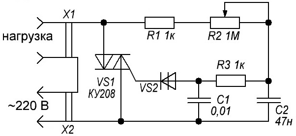

Регулятор напряжения переменного тока 220 В

Рис. 1 - Схема регулятора
Таблица 1
| Обозначение | Наименование | Номинал | Количество | Примечание/замена |
|---|---|---|---|---|
| C1 | Конденсатор | 0,01 мкФ/400 В | 1 | |
| C2 | Конденсатор | 0,047 мкФ/400 В | 1 | |
| R1, R3 | Резистор постоянный | 1 кОм/0,25 Вт | 2 | МЛТ-0,5 |
| R2 | Резистор переменный | 1 МОм | 1 | |
| VS1 | Симистор | КУ208 | 1 | серии ТС в металлическом корпусе на 10 А |
| VS2 | Динистор | КН102А | 1 | можно взять с эконом лампочки |
Если поставить переменный резистор на 500 кОм, то будет регулировать довольно плавно, но только с 220 В до 120 В, а если на 1 МОм то регулировать будет жестко с промежутком 5-10 В, но зато диапазон увеличится с 220 В до 60 В.